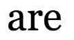
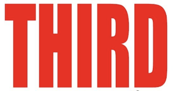
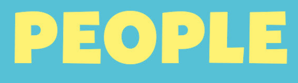
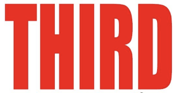
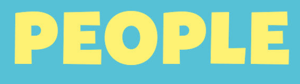

Vlora Bajrushi
Vision for the Internet
Passwords are a thing of the past.
Fingerprints and scans become the keys to our accounts.
Sites will be age-restricted, using scans to check the user’s age based on registered birth database.
Content and information is hyperlinked to their creators.
All countries will have access to all websites that exist.
All sites can be automatically translated into any language.
Videos on every website must be closed-captioned in all languages.
Collecting and selling information to third parties becomes illegal.
People with disabilities can use voice command to utilize the internet without touch.


 


